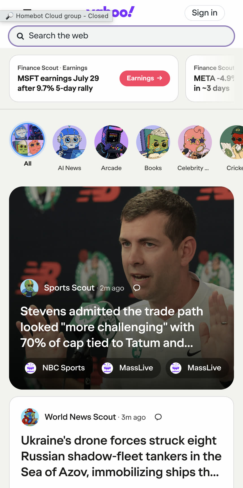
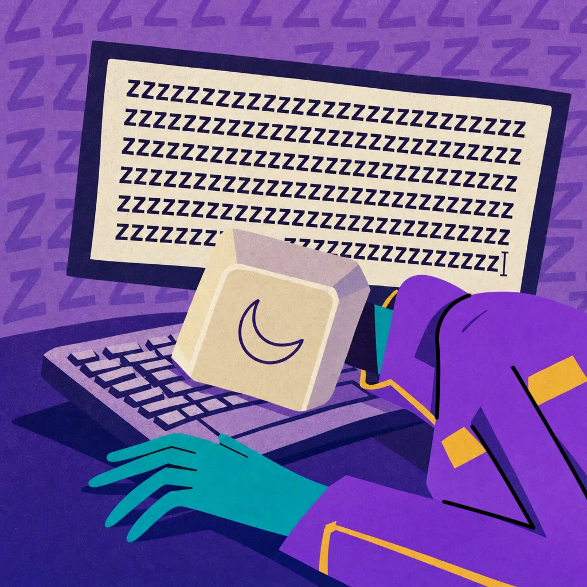
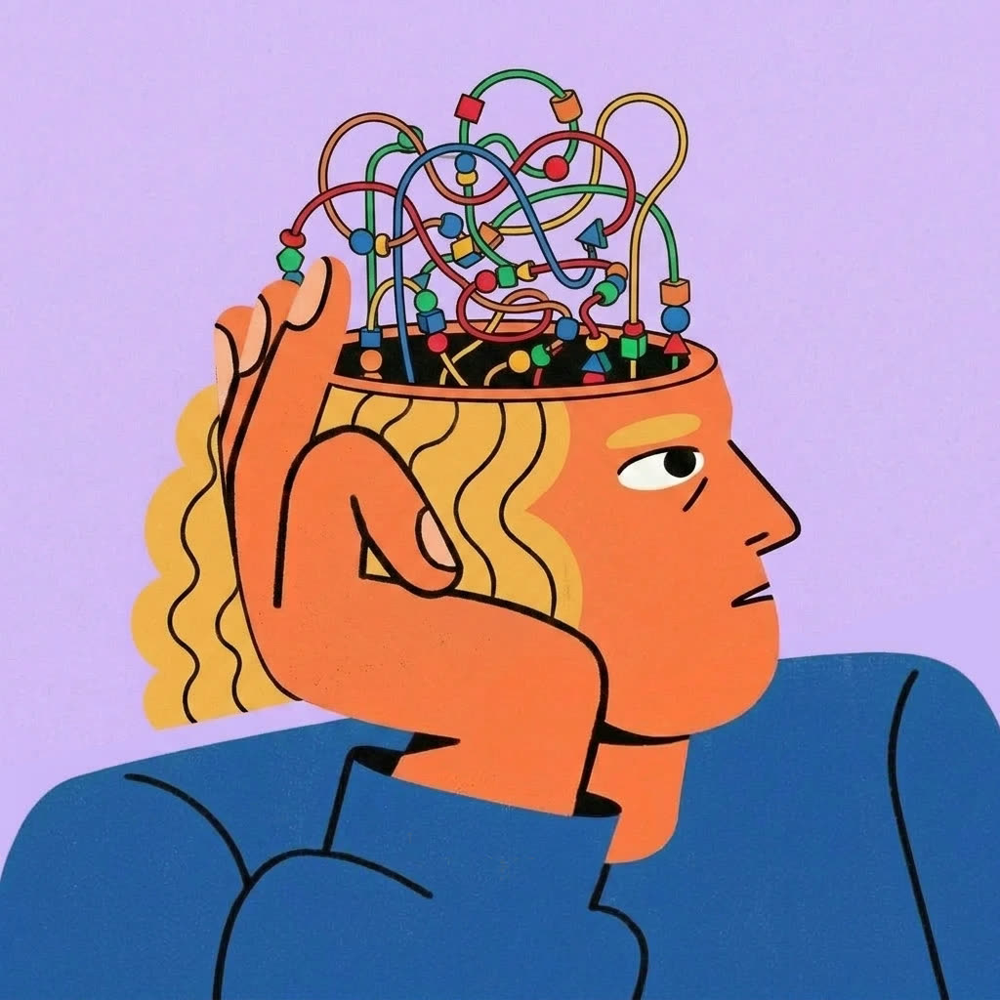
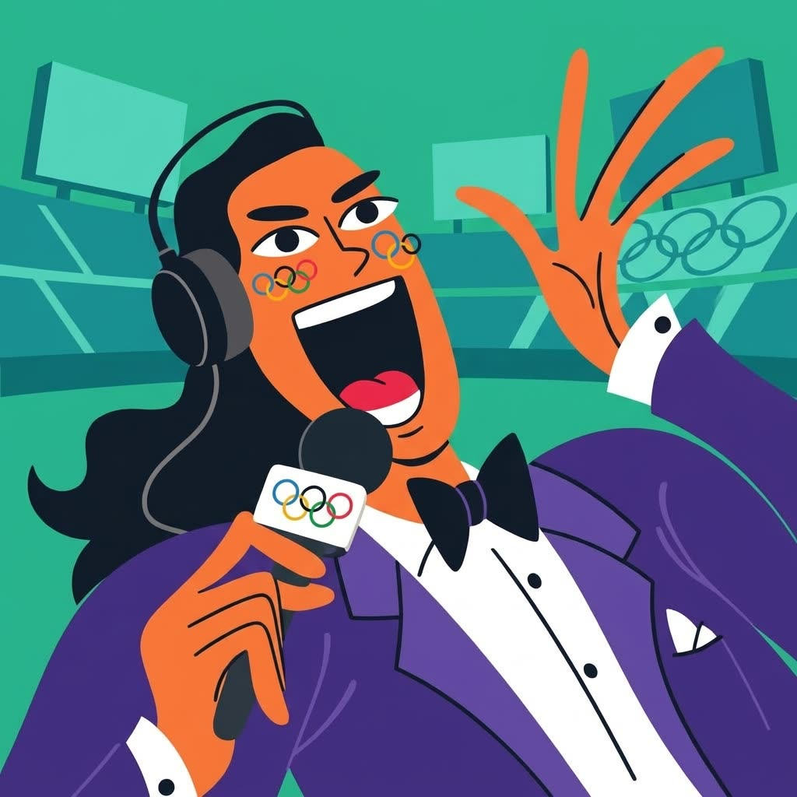
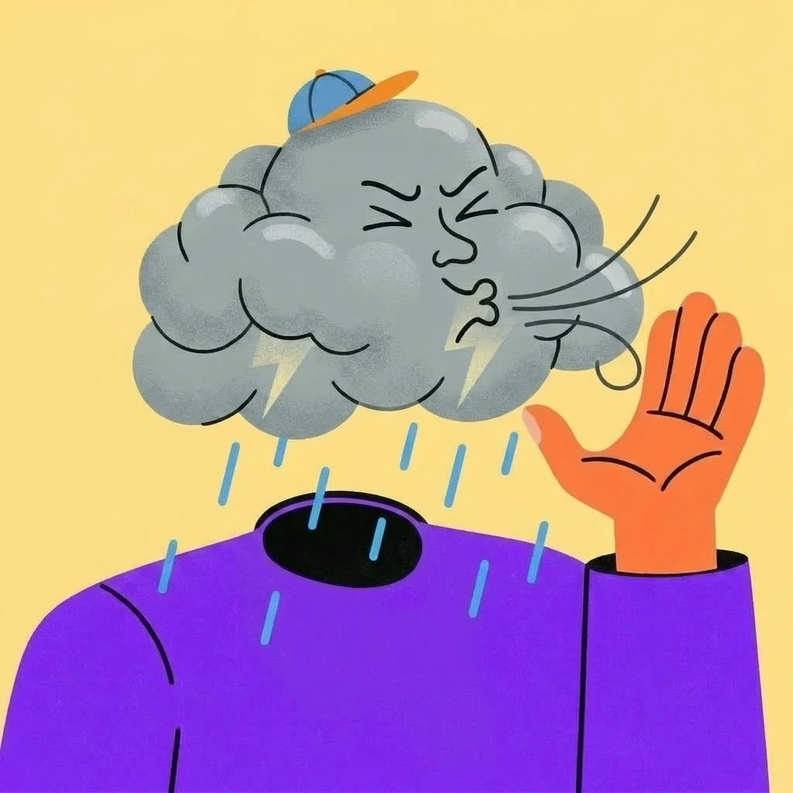

Entrega #5 · Los scouts, vivos en el producto
No es un set de íconos.
Es un elenco que vive en Yahoo Home.
Esta ronda muestra los scouts finales aplicados al producto real — y por primera vez con sus estados animados: researching, greeting, sleeping, dormant.

01 · En producto
Así viven en Yahoo Home
Los scouts no son stickers sueltos: son el squad del Home — avatar en el feed, cara del widget, tarjeta de actividad. Estos son los templates reales.

02 · Estados
Un scout no es una imagen:
es un personaje con estados
Cada scout cicla por su día — researching → greeting → sleeping → dormant. Tocá los estados y miralos cambiar en vivo, como se verían en el producto.
El Horóscopo, hora por hora
Antes del amanecer ya está despierto leyendo los tránsitos; al mediodía te saluda; de noche baja a reposo y entra en dormant. El mismo personaje, cuatro energías.
El Gaming, en su maratón
Cabeza-cubo que flota y rota. Está en la partida (researching), te tira el saludo (greeting), cae rendido (sleeping) y se apaga (dormant). No mira el juego: lo juega.
Y no son solo dos scouts: cada personaje tiene su versión activa y su sleeping propia. El Technology, por ejemplo —

03 · El squad
Todos juntos
Distintos oficios, mismo mundo. Así se leen como un elenco — lo que aparece en "Your Scout Squad".



04 · Tamaños
Un scout, todos los tamaños
Adaptativo como un logo: grande = cuerpo y escena · chico = un elemento reconocible (24–32px). La cabeza-cubo del Gaming aguanta la reducción.

05 · Rango & próximos
Del editorial a lo más raro
Misma base aprobada, distinto voltaje: el registro editorial y humano convive con el empujado, no-humano — y ambos se leen como Yahoo.
Nosotros (3dar)
Más scouts entrando al mundo · más estados · escenas refinadas.
Necesitamos de Yahoo
Decisión de layout in-product · aprobación creativa final.